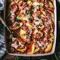

Cheesey Beef Stuffed Shells

Description
This cheesy beef stuffed shell recipe is to die for.
Not only is it relatively easy to create,
it can also be stored away in the freezer for months!
Ingredients
- 2 cups parmasean cheese
- 1 large can of sauce
- 1 cup mozzorella cheese
- 1lb lean ground beef
- 1 box jumbo shells
- 2 large white eggs
Steps
- Cook shells until nearly tender.
- Cook ground beef to temperature.
- Beat eggs, add parmasean and mozzorella
- Layer bottom of pan with thin layer of sauce
- Stuff shells with a little ground beef and cover with cheese mixture, roll closed.
- Once all shells are placed into pan, cover with sauce and mozzorella cheese.